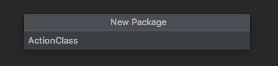

Create an Action Pakage
Right click on project --> new --> Python Package
Give Pakage name --> Click Enter --> Python Package is created successfully.

Right click on Python Package --> new --> Python File
Give File name --> Click Enter --> Python File is created successfully.
# Create Global Instance and Initialize WebDriver
# Created on Oct 24, 2019
# @author: MITHUN ROY
from selenium import webdriver
Instance = None
def Initialize():
global Instance
Instance = webdriver.Chrome("/Users/mkroy/Downloads/chromedriver")
Instance.implicitly_wait(10)
return Instance
# Check For Web Element Present Or Not?
# CHECK FOR ELEMENT def is_web_element_displayed(element): try: timeout = 3 wait = ui.WebDriverWait(Instance, timeout) wait.until( lambda driver: driver.find_element_by_xpath(element).is_displayed()) print ("Element available") return True except: print("Element not available") return False
# Web Element Click and Implicit Wait?
def click_and_implicit_wait(element):
try:
if Instance.find_element_by_xpath(element).is_displayed():
Instance.find_element_by_xpath(element).click()
Instance.implicitly_wait(30)
return True
else:
return False
except:
return False
# Web Element Click and Explicit Wait?
# CLICK AND EXPLICIT WAIT
def click_and_explicit_wait(element, time):
try:
if Instance.find_element_by_xpath(element).is_displayed():
Instance.find_element_by_xpath(element).click()
sleep(time)
return True
else:
return False
except:
return False
# To Compare Expected Web Element Count
def expected_web_element(element, expected_number):
try:
if len(Instance.find_elements_by_xpath(element)) == expected_number:
return True
else:
return False
except:
return False
# To Check Web Element Count Is > 0
def web_element_count(element): try: if len(Instance.find_elements_by_xpath(element)) > 0: return len(Instance.find_elements_by_xpath(element)) else: return 0 except: return 0
# Type a Text Box Using Selenium Python
def type_text(element, text):
try:
if Instance.find_element_by_xpath(element).is_displayed():
Instance.find_element_by_xpath(element).clear()
Instance.find_element_by_xpath(element).send_keys(text)
return True
else:
return False
except:
return False
# Select A Drop Down Using Selenium Python
def select_drop_down(element, option): try: if Instance.find_element_by_xpath(element).is_displayed(): select = Select(Instance.find_element_by_xpath(element)) select.select_by_visible_text(option) return True except: return False
# Read a Text/LinkText Using Selenium Python
def get_element_text(element): try: if Instance.find_element_by_xpath(element).is_displayed(): return Instance.find_element_by_xpath(element).text except: return "NO TEXT"
# Implicit Wait : Selenium Python
def implicit_wait(t): Instance.implicitly_wait(t)
# Explicit Wait : Selenium Python
def explicit_wait(t): sleep(t)
# Navigate Back : Selenium Python
def go_back(t):
Instance.back()
sleep(t)
# Close the Instance : Selenium Python
def close_driver():
global Instance
Instance.quit()